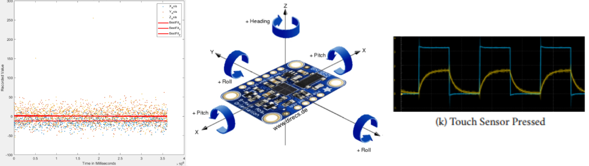

Sensing and Sensor Technologies - ECE 167
This class required me to program an UNO32 microcontroller in the C language much like my Microcontroller System Design course. This class however had a focus on utilizing different sensors as well as hardware and software methods of filtering their input.
The very first lab of this class, viewable below, required me to find the angle of a variable resistance flex angle sensor. This flex sensor was set up as one resistor in a voltage divider circuit and the divided voltage was fed into a microcontroller analog-to-digital converter pin. This value was placed in a spreadsheet at measured angles of flex and a function was created to convert voltage to angle of bend. These values were then averaged over a number of samples in order to smooth out the result. This same lab also involved the analysis of different analog filters with theoretical derivations as well as experimental confirmation. The code for this lab can be found here in my GitHub.
The second lab involved reading rotary encoder values and mapping them to set three PWM signals in order to control the color of an RGB LED. Twisting the rotary encoder resulted in a smooth change of the color.
This same lab also required me to map values of a ping sensor to a distance measurement which required a similar process as the flex angle sensor. Finally, this lab required me to build a circuit that could changed signal when capacitance was changed using a capacitive touch sensor. This change needed to be large and easy to read using the microcontroller and several circuits were utilized. The code for this lab can be found here in my GitHub.
The third lab and also the most difficult of the course involved filtering the data output from a 9-axis IMU. Each of the three-axis sensors; the accelerometer, gyroscope, and magnetometer required a different method of data filtering. All of it required recording data over a period of time and applying equations in MATLAB to adapt the results into knowing the attitude of the IMU. The code for this one can be found here in my GitHub.
The following button shows the report for my team's final project. I was a member of a two man team given limited time to create a device which would translate the American Sign Language alphabet into ASCII letters. This was done using a glove with five flex angle sensors to determine the angle of each finger. Each of the flex angle sensors required separate value to angle mapping. This was then used to determine the angle of each finger and the combinations were read to determine the state of the hand. The code for this can be found here in my GitHub.